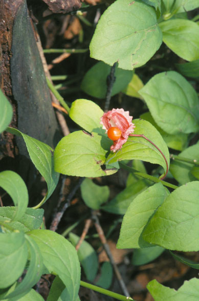
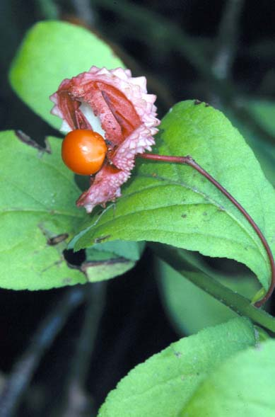
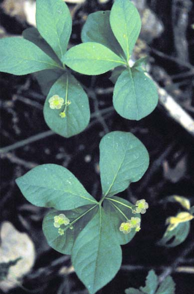

Euonymous Obovatus
Family: Alastraceae
Running Strawberry Bush
Swink/Wilhelm # 7


Click to view larger photo
FLOWERING: Mid-May to mid-June
SEED TIMING: September
HABITAT: Rich woods
DIAGNOSTIC FEATURES: A low spreading shrub seldom over 1 foot from the ground. Tiny flowers are greenish. Red-orange berries form in pinkish, 3-celled, nut-like capsule.
TO PICK: Pick entire capsule and refrigerate to keep pulp from drying out.